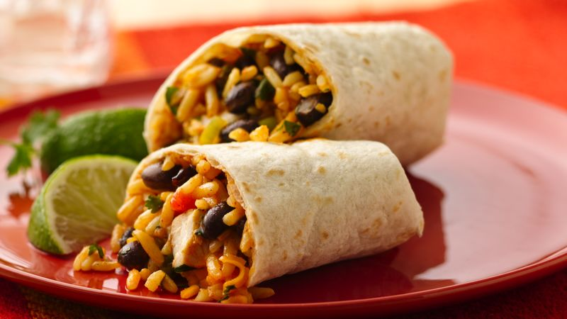

Chicken and black bean burritoes

Description:
This recipe is really delishious. I discovered
it one day while trying to think of something
different to make for dinner. I always had made traditional
refried bean and beaf burritoes. I decided there needed to
be a change and I found this receipe. It is cooked chicken and black beans, either canned or dried.
Ingredients:
- 1 package 7.6oz Old El Paso Spanish Rice
- 1 Tablespoon vegetable oil
- 1 lb skinless chicken breasts, cut into 1/2-inch pieces
- 1 packet (1 oz) Old El Paso™ Original Taco Seasoning Mix
- 2/3 cup water
- 1 can (15 oz) Progresso™ black beans, drained, rinsed
- 1 medium red bell pepper, chopped (1 cup)
- 1/3 cup sliced green onions (about 5 medium)
- 1/2 cup chopped fresh cilantro
- 1 package (11 oz) Old El Paso™ Flour Tortillas for Burritos (8 Count), heated as directed on package
- 1 1/2 cups shredded Cheddar cheese, taco-seasoned cheese blend or Mexican cheese blend (6 oz)
Steps:
- In 3-quart saucepan, make rice as directed on package, omitting butter.
- In 10-inch skillet, heat oil over medium-high heat 1 to 2 minutes. Add chicken; cook 3 to 4 minutes, stirring occasionally, until no longer pink in center. Stir in taco seasoning mix and water. Cook 3 to 4 minutes, stirring occasionally, until most of liquid is absorbed.
- Stir chicken mixture, beans, bell pepper, onions and cilantro into hot rice mixture. If necessary, cook until hot, stirring occasionally.
- Spoon slightly less than 1 cup chicken mixture down center of each warm tortilla. Top with cheese. Fold bottom of each tortilla 1 inch over filling. Fold in sides, overlapping to enclose filling. Fold top over sides. Serve with guacamole, salsa and sour cream.